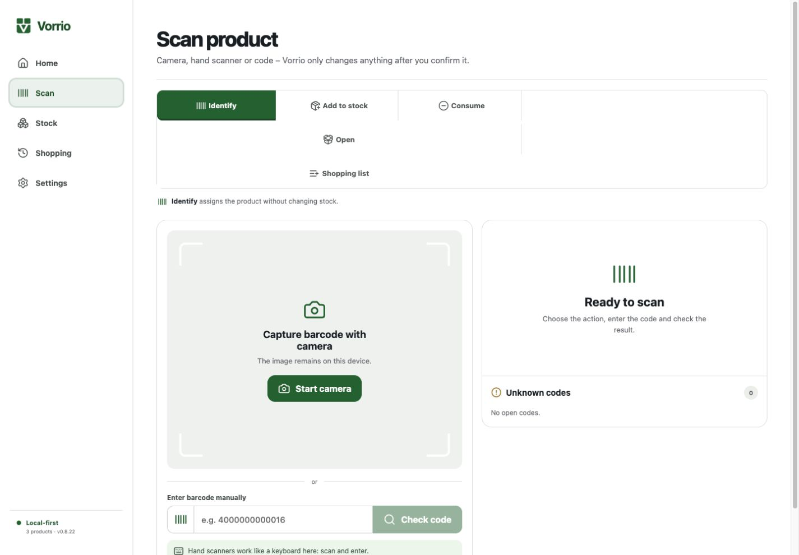
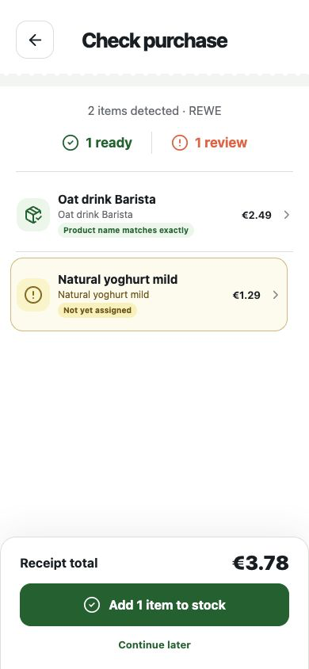
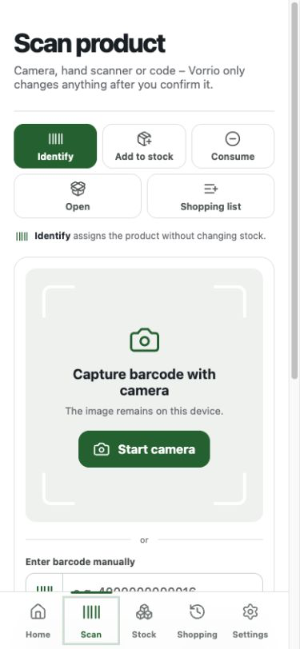
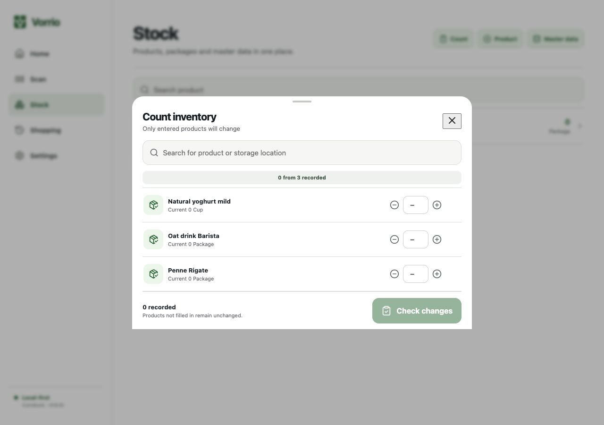
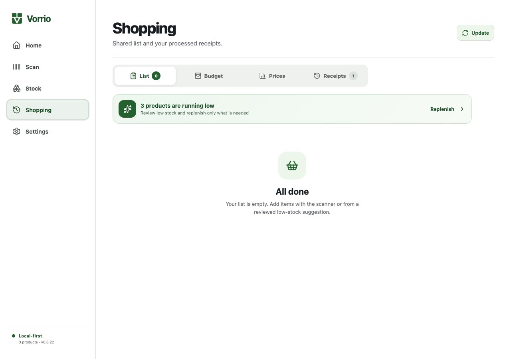
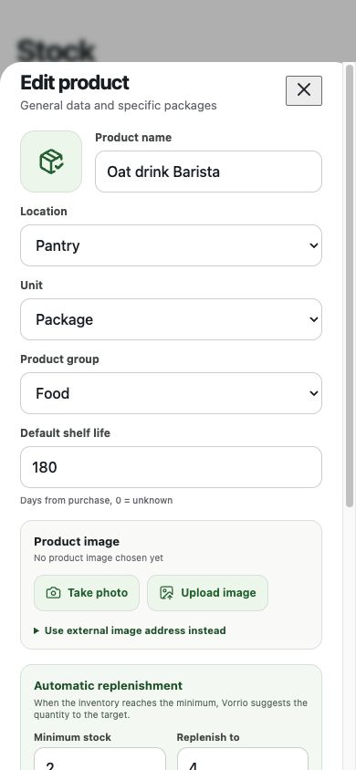

Receipts & scans
Record purchases as a receipt or move individual products using a barcode.
Vorrio connects receipts, product scans and your current inventory – self-hosted and under your control.


Vorrio prepares. You decide what changes.
Take a photo of the receipt, upload a PDF or scan the barcode.

Review product matches, quantities and prices with clear explanations.
Only confirmed products end up in the local inventory.

Inventory, purchases and product knowledge in a single, self-hosted application.
Record purchases as a receipt or move individual products using a barcode.
Manage products, variants, storage locations and quantities yourself.
Spot low stock early and keep a shared shopping list.
Only evaluate confirmed household data – transparently and locally.


Vorrio runs on your infrastructure.
Inventory and product knowledge remain with you.
No uncertain hit will silently change your data.
Vorrio is available today as an installable PWA for desktop, iOS and Android. Native apps are planned as an extension with real value beyond the browser.
Use it in the browser or install it on the home screen – with a responsive interface, camera scanning, an offline queue and Web Push.
Simplify installation and upgrades, further audit accessibility and APIs, and define a dependable compatibility policy.
Store apps with native camera access, sharing, secure device storage, offline synchronization and push notifications.
Start Docker Compose, create the first owner and use Vorrio in the browser or as a PWA.
$ git clone https://github.com/amturo-gbr/vorrio.git
$ cd vorrio
$ cp .env.example .env
$ docker compose up -d --buildAGPL-3.0-or-later · Docker · Responsive PWA
Vorrio is free software. Report bugs, share ideas, improve translations or contribute directly to the code.